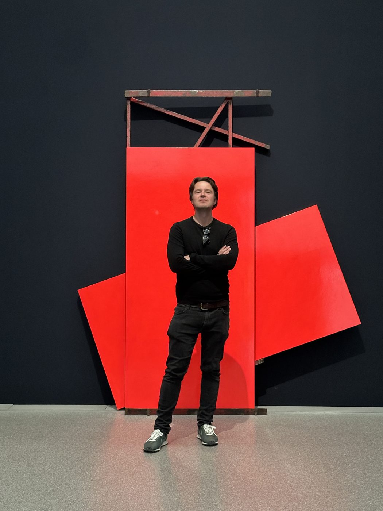
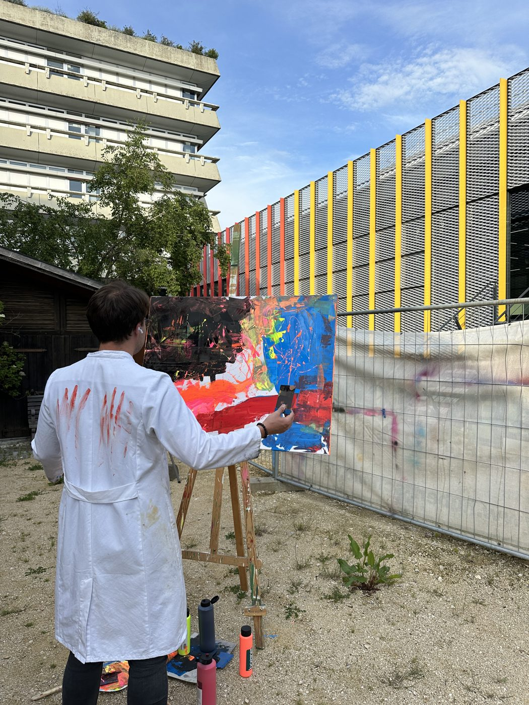
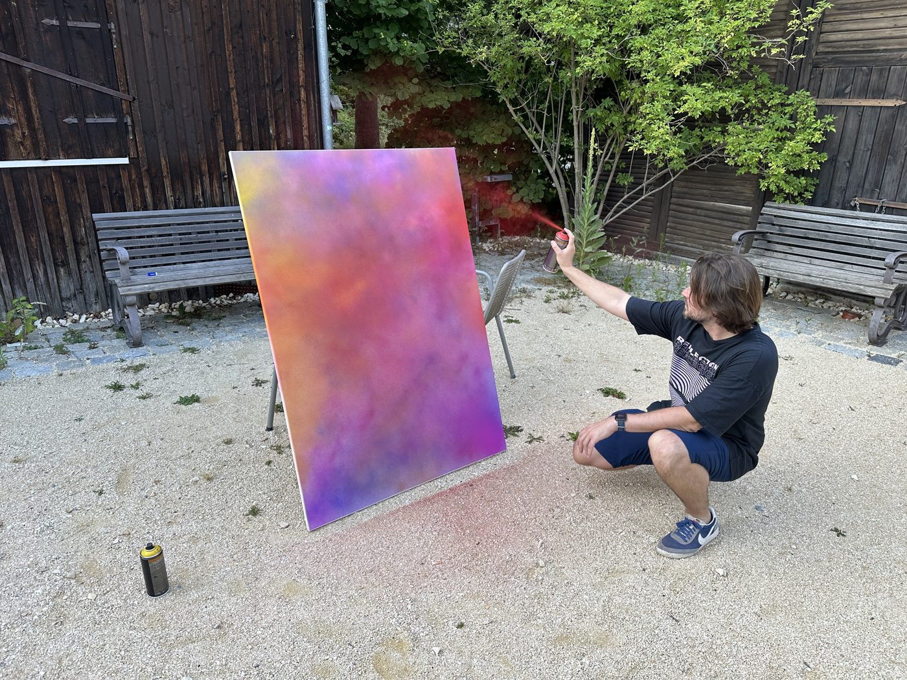
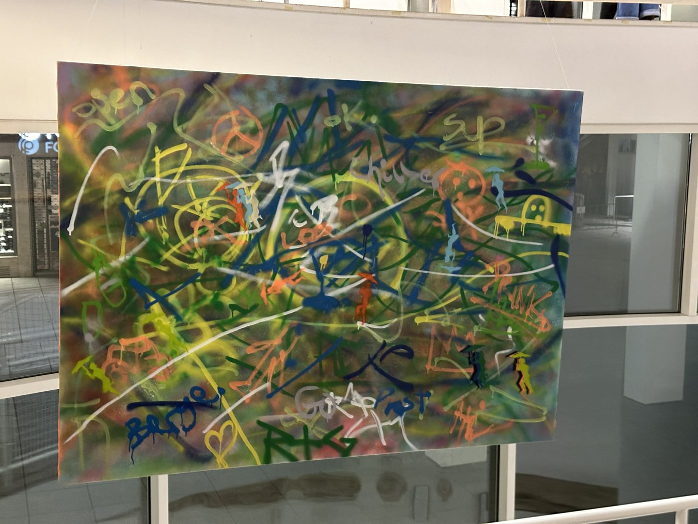
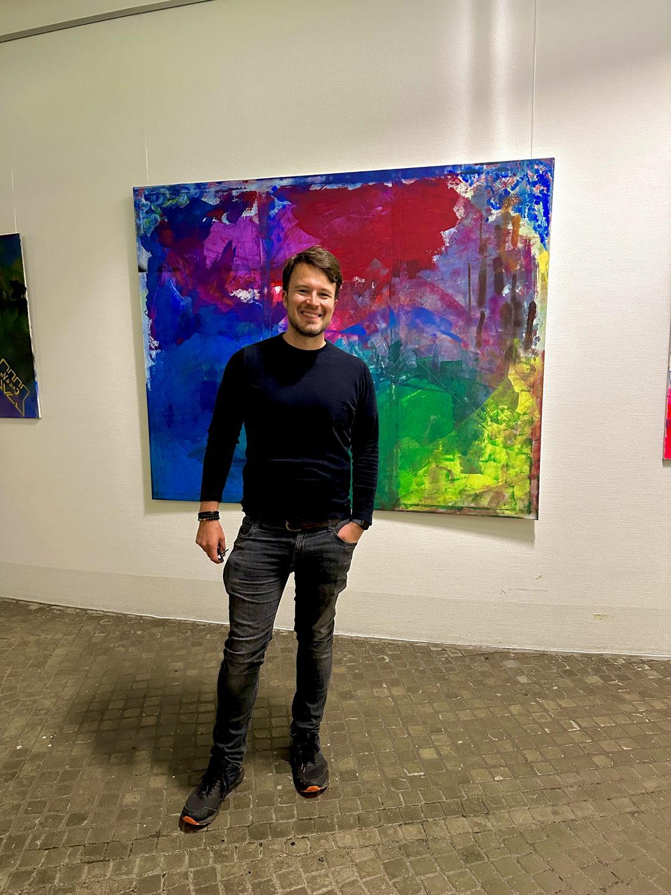
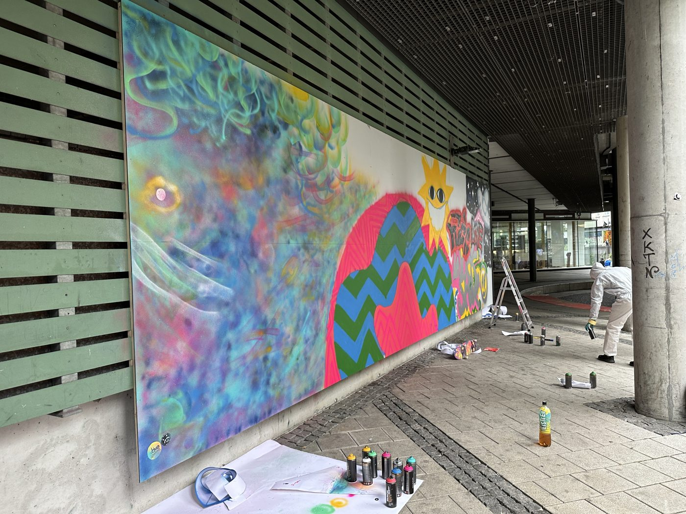
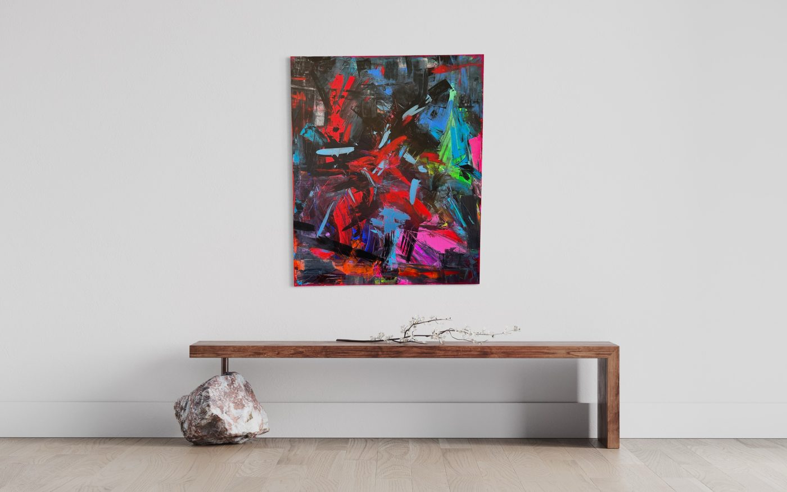
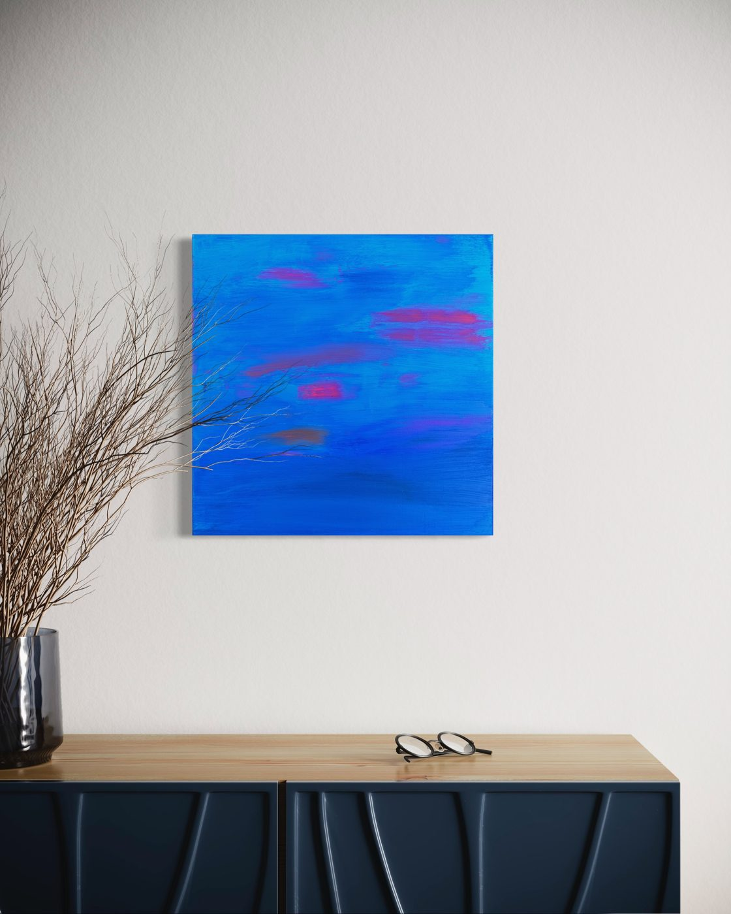

Who is Moritz?

I'm a third culture kid — German and Australian, raised between countries, cultures and languages. I grew up and lived in Singapore, Bangkok, New York, Milan, Stockholm, New Zealand and Hong Kong; today I'm based in Ulm, Germany. That in-between is where I feel most at home, and it's where my painting comes from.
By profession I'm a service and business designer: I spend my days shaping experiences for people. Painting is the other side of that coin — no client, no brief, no plan. Just me, a canvas and whatever needs to get out.
How I work
I paint in my atelier in Ulm — and when I'm back in Australia, I paint there. The five works from 2024 in the gallery were painted in Melbourne.
I love bright neon and acrylic colours, and I love spray paint. I love experimenting with layers — combining different colours and different kinds of paint, layer after layer: sprayed, poured, thrown, brushed. I work explosively. Each painting is a burst of whatever I'm feeling in that moment: the canvas gets the emotion in raw form. It's pure fun, and it's honest therapy.
For me, the edge of a canvas is still canvas — my paintings continue across the borders. And many of them carry a secret: with all that neon acrylic and spray paint, a whole new world opens up under UV light. The work changes completely in the dark.

Where it comes from
I grew up surrounded by art and modern art museums thanks to my parents — I didn't always appreciate being dragged through galleries across the world back then, but today I'm deeply grateful for it. I love visiting the Art Biennale in Venice, and my favourite museum is the MoMA in New York.

Exhibitions & public work
My work has found its way onto a few walls beyond the atelier:

Ulmer Stadthaus, Ulm — exhibited work, 2023

University of Ulm — exhibition, 2024

Blaustrand, Ulm — carpark wall, spray-painted as part of a Stadt Ulm social project, 2023
Venice, Italy — a painting of mine lives on the wall of my friend's restaurant, 2023
In rooms
Because the best test of a painting is a wall:


Say hi
I hope you like what you see. I paint for the joy of it — and it would make me genuinely happy to see my work find new walls. If a painting speaks to you, if you'd like to commission something, show my work, or just talk colour: follow me on Instagram or write to . I'd love to find pathways to share my work with others.
If it inspires you, moves you, or makes you feel something — I've done a good job.
Wer ist Moritz?
Ich bin ein Third Culture Kid — Deutscher und Australier, aufgewachsen zwischen Ländern, Kulturen und Sprachen. Ich habe in Singapur, Bangkok, New York, Mailand, Stockholm, Neuseeland und Hongkong gelebt; heute lebe ich in Ulm. Dieses Dazwischen ist mein Zuhause — und der Ursprung meiner Malerei.
Beruflich bin ich Service- und Business-Designer: Ich gestalte Erlebnisse für Menschen. Die Malerei ist die andere Seite dieser Medaille — kein Kunde, kein Briefing, kein Plan. Nur ich, eine Leinwand und das, was raus muss.
Wie ich arbeite
Ich male in meinem Atelier in Ulm — und wenn ich in Australien bin, male ich dort. Die fünf Arbeiten von 2024 in der Galerie sind in Melbourne entstanden.
Ich liebe leuchtende Neon- und Acrylfarben, und ich liebe Sprühfarbe. Ich experimentiere mit Schichten — verschiedene Farben und Farbarten, Schicht um Schicht: gesprüht, gegossen, geworfen, gemalt. Ich arbeite explosiv. Jedes Bild ist eine Entladung dessen, was ich in dem Moment fühle: Die Leinwand bekommt die Emotion in Rohform. Es ist pure Freude — und ehrliche Therapie.
Der Rand einer Leinwand ist für mich immer noch Leinwand — meine Bilder laufen über die Kanten weiter. Und viele tragen ein Geheimnis: Durch all das Neon-Acryl und die Sprühfarbe öffnet sich unter UV-Licht eine neue Welt. Im Dunkeln verwandelt sich das Werk komplett.
Woher es kommt
Ich bin dank meiner Eltern mit Kunst und Museen für moderne Kunst aufgewachsen — damals fand ich es nicht immer toll, durch Galerien auf der ganzen Welt geschleppt zu werden, heute bin ich zutiefst dankbar dafür. Ich liebe die Kunstbiennale in Venedig, und mein Lieblingsmuseum ist das MoMA in New York.
Ausstellungen & öffentliche Arbeiten
Meine Arbeiten haben es auch über das Atelier hinaus an ein paar Wände geschafft:
Ulmer Stadthaus — ausgestellte Arbeit, 2023
Universität Ulm — Ausstellung, 2024
Blaustrand, Ulm — Parkhauswand, besprüht im Rahmen eines Sozialprojekts der Stadt Ulm, 2023
Venedig, Italien — ein Bild von mir hängt im Restaurant eines Freundes, 2023
In Räumen
Denn der beste Test für ein Bild ist eine Wand:
Sag hallo
Ich hoffe, dir gefällt, was du siehst. Ich male aus Freude — und es würde mich aufrichtig glücklich machen, wenn meine Arbeiten neue Wände finden. Wenn dich ein Bild anspricht, du eine Auftragsarbeit möchtest, meine Arbeiten zeigen willst oder einfach über Farbe reden magst: Folge mir auf Instagram oder schreib an . Ich suche gerne Wege, meine Kunst mit anderen zu teilen.
Wenn es dich inspiriert, bewegt oder etwas in dir auslöst — dann habe ich meinen Job gut gemacht.